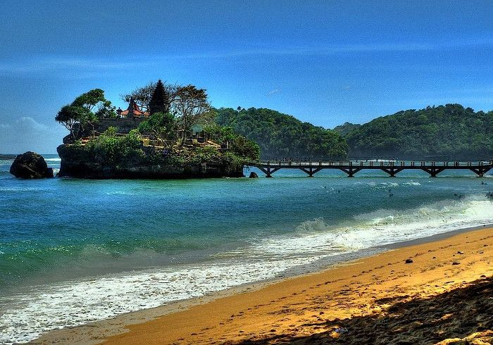
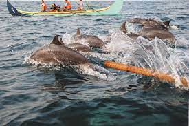

Segara diambil dari diksi jawa yang berarti lautan. Segara hadir
sebagai platform bagi kawula muda dalam bercerita tentang perjumpaan
mereka dengan laut-laut biru dan seisinya di Ibu Pertiwi. Mulai,
Jalani, dan Ceritakan pertemuan kalian dengan laut-laut
Indonesia di Segara.
Oceanis' POV
Kisah-kisah berkesan tentang lautan dari sudut pandang Oceanis.
Halo, saya Pi Cheolin. Sebenarnya saya penyanyi tarot, tapi lagi
cuti. sekarang alih profesi jadi traveler. tapi jadi traveler
biasa tuh ga extreme, dan sejak lahir saya selalu jadi manusia
extreme. makanya saya memutuskan untuk jadi traveler horror.
Destinasi pertama saya, Pantai Selatan!

Berkenalan dengan Dudung, Lumba-Lumba dari Pantai Kiluan
Kontributor: Jeon Wonwoo
Tags:
#lumbalumba #PantaiKiluan #Lampung #LautIndonesia
Saya kira namanya peter, ternyata DUDUNG! Lucu ya. Hewan pintar
ini mengiringi perjalanan saya di laut Kiluan. Salah satu laut
cantik di Lampung yang jadi tujuan utama wisatawan. Saya datang
karena rasa penasaran saya tentang betapa menariknya pantai
Kiluan. Semata untuk membuktikan bahwa memang selayak itu untuk
jauh-jauh dikunjungi oleh Jakarta Siders seperti saya. Ternyata
semuanya terbayar! Kiluan dan Dudung jadi memori tak terlupakan!

Beauty of the Sea
Galeri keindahan lautan Indonesia yang ditangkap oleh lensa
Oceanis!
.jpeg)
.jpeg)
.jpeg)
.jpeg)
.jpeg)
.jpeg)